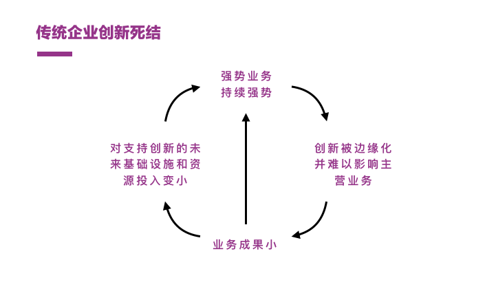
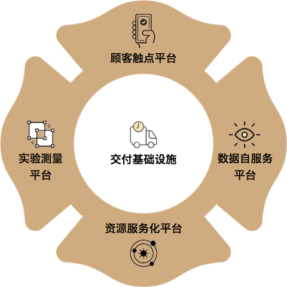

依靠内容丰富的产品目录、配搭先进的电话销售系统、外加无微不至的客户服务，L公司在过去的50年里一直是北美中西部最令人骄傲的传统品牌。无一例外地，和北美其他服饰品牌商一样，L早在10年前就已经开始对数字渠道进行投入。
新任的首席市场官告诉我，过去10年里，其线上销售的份额，已经7年没有任何增长。在赢者通吃的数字时代，我们都知道这意味着慢性死亡。过去的几个月，从「锈带」到湾区，我接触了多家北美处于数字化转型不同阶段的传统企业，深刻体会传统企业数字创新的难题。
部门的强权
K公司某位产品总监与我抱怨了其「数字卡包（Digital Wallet）」产品的奇怪逻辑：「你以为数字卡包是放卡的，可我们自己品牌的信用卡却根本放不进这个卡包，为什么？因为信用卡业务是个强大的独立部门，他们有自己的App，消费者还有礼券的App，积分卡的App，还有个我们的数字卡包App」。
有趣的是，从K公司提供的文档中，我发现，5年前该公司就已经提出「以客户沉浸为目标的数字战略」，所有人都理解客户需要一个无缝的、整合的、全方位的数字体验，但现实是，当你来到组织内部，每个人对于客户体验的认识仅在于其部门内，而缺少从品牌角度看待客户体验的意识，其数字体验的割裂在所难免。
E公司是北美车险领域数字化最具竞争优势的公司，在谈到「移动转型（Mobile Transformation）」时，其数字技术总监跟我说：「我们花了五年时间说服了索赔（Claims）部门什么是无纸化，我估计还要花另外五年教育他们明白移动（Mobile）不是打电话」。
和K公司的产品总监所面对话语权强大的信用卡业务部门类似，E公司在数字化的进程中面对的内部挑战，则来自于索赔部门。这基本上成为我探访的所有数字转型企业都需要面对的难题——一个成功的强势部门缺少转型的意愿、而拥有转型意愿的内部组织又缺少挑战现状的资源。
无效的规划
我工作的一部分，是翻阅每家企业过去几年关于数字战略规划的文档。有趣的是，几乎所有企业都制定过从6个月到10年不等的计划，从愿景、路线图、到KPI、反馈机制、与资源投入，几乎每年都有一个新的版本。把所有文档汇聚在一起，你会发现所有公司（甚至无论行业）对于数字化共同的四样东西：
- 数据（Data）
- 客户洞察（Customer Insights）；
- 全渠道（Omnichannel）；
- 个性化（Personalization）；
每年，不得不进入数字化浪潮的企业，都在重复一个相同的逻辑：充分挖掘数据的价值、发现客户洞察、通过全渠道、建立个性化的客户体验。每家企业在做数字化项目规划时，无外乎这四个主题，而真正的难题是，少有人知道为什么做、鲜有人知道怎么做、更难有人真正做出来。
这种无效规划的背后，还有「大众创新」的假象，即认为创新是集思广议的结果，欣喜于短暂的企业内创新文化蓬勃发展，却回避创新所意味的责任、坚持、斗争和可能的牺牲。
商业的认识
数字时代里，产品（Product）被数字技术重新定义——一个在供需关系下持续变化的有机生命体，而不再是传统组织里研发、生产、市场、销售、服务五个体系中相对稳定、且完全不同的解释。
在这些合作的企业中，没有一家不提出「以客户体验为中心」的愿景，却忽视了一个重要的问题，即组织中的行事者，并没有认为数十年里「以客户体验为中心」的口号，在数字时代有什么显著的区别。
互联网企业超出想象的服务，已经使他们开始意识到客户体验的重要性，但他们大多数时感受的，只是以一个普通消费者的角度去理解，而没有从生产或服务提供者的角度思考到底什么是「以客户体验为中心」，并构建完全不同的商业逻辑。
因此，传统企业所面临的认识问题，早已不是客户体验是否重要，而是体验背后那完全被重新定义的供需关系与产品逻辑，即对商业的重新认识。
成功的遗产
在北加州，作为一家产供销深加工多位一体的肉制品公司，30多年来，N公司为北美乃至亚洲的高级餐馆或食品零售企业提供优质肉品，而维持其多年有序运行的数字技术仍是上世纪60年代的培机（BASIC）语言。
这基本是许多北美企业的共同之处，技术虽然落后却高效运行，并支持着企业过去几十年的成功，这便是我们口中「成功的遗产（Legacy of Success）」。除高效之外，所有遗产所集成的还有上个世代遗留的商业逻辑，而面对新世代完全不同的供需关系，往日的成功成为最难以割舍的限制。
对于N公司而言，肉品市场开始出现越来越精细化的趋势，消费者期待更小块、更独特、和更新鲜的肉品，这意味着更加频繁的小额交易、更快的物流期待、更多样的工序、更多的小客户，这与其传统商业逻辑迥然不同，虽然一切正常，但在可见的未来，支持往日成功的遗产，已不可能支持未来的商业逻辑，帮助其继续成功下一个30年。
在和数字时代新兴企业（Digital Natives）的竞争中，真正的竞争来自于这些新兴企业生来便基于全新的商业逻辑，不具备往日的成功，也无所谓历史包袱，可以心安理得地构建数字企业所需要的技术基础设施。而传统企业明知道基础设施对于数字创新的重要，却难以左右业务部门传统的业务思维，为正在发生悄然变化的商业逻辑做技术的基础投入。
创新死结
无论「创新或死（Innovate or Die）」还是「以客户体验为中心」，早已成为陈词滥调，几乎没有企业不谈论创新、客户、数字化、体验、和产品的重要性，而这些企业，无一例外地面对着以下组织级创新难题：
第一，如何应对一个拥有过大权利的强权部门——缺少数字变革的动力、同时对可能对其地位有威胁的创新采取不合作甚至抵触的态度；
第二，如何避免盲目乐观的、游戏般的创新规划——热衷于大而全的规划、而缺少坚持的耐力、改变的决断、和从失败中学习的智慧；
第三，如何重新认识新的商业逻辑——只谈论客户体验，而无法跳出现有商业逻辑和组织行为重新认识品牌、价值、服务、和渠道；
第四，如何建设新的遗产——缺少对现有技术基础设施以及核心能力的正确认识，以及对未来基础设施的蓝图规划。
有趣的是，这四大难题互相作用，形成了一套典型的传统企业创新死结：因为有强势部门限制，创新无法和主营业务结合，则难以应对甚至形成新的商业逻辑；成果不显著，则无法对未来基础设施的技术投资争取话语权和资源；资源有限则鲜有成效，则现有业务难以撼动，又加深了强势部门的限制。

如何打破
推动传统企业数字创新的核心目标，就在于对这个创新死结的打破，并尝试建立新的正向循环：持续要求在核心业务领域进行高复杂度创新，逼迫创新和核心业务进行整合，转化业务成果并开始尝试新业务模式，换取更多对未来技术基础设施的投入，最后不断演进核心业务，进一步推进创新和核心业务的整合。为实现创新正循环，领导者企业持续在以下四个方面进行努力。
逼迫强势业务释放空间和强迫合作
近百年的成功运营，某豪华车品牌M形成了的若干核心业务部门，研发、全球IT、品牌、和渠道网络各自形成稳定多年的业务实体。
为了释放中国本地数字化革新的能力，该品牌大大增加了中国区IT建设的自主性、并建立跨部门的横向消费者体验事业部，并通过自上而下的行政手段，不断提高其事业部的地位，逼迫现有强势业务部门释放一定空间，做跨组织协作的创新实践。
拒绝边缘化创新进行高复杂度创新
M品牌同时也意识到，使创新真正产生规模化的业务成果，必须进行艰难而横跨组织的高复杂度创新，而不能只是可有可无的、少数人的派对。在某个大规模创新项目中，为了使得中国车主拥有更个性化和独特的数字体验，M品牌尝试重新建造依赖第三方软件数十年的经销商管理系统。
这一系统是行业标准配置，几乎牵动了所有的业务部门、并覆盖了几乎所有的车主试车、购车、和用车体验场景。该创新的复杂程度在M品牌数字化的历史上，都是独一无二的，而正是该项目的不断坚持和持续投入，成功联合了曾经几乎隔离的若干部门，使得他们开始对核心业务上的数字化实践进行最密切的协作。
尝试进行商业模式创新倒逼企业现有组织转型
电商平台、经销商售车平台、车主平台、经销商售后平台、零件平台等几大高复杂度创新的逐步成型，使得一个全面覆盖车主数字体验的商业生态逐步完成——M品牌开始将数字体验作为媒介，与生态环境内的各种角色，包括经销商、零件商、服务提供商、副厂体系等进行链接，以形成数字化商业逻辑独有的规模优势。
M品牌也在不自觉地进行着从车辆的制造商到与出行相关的信息服务商的转化，相信经过若干年的持续投入，传统商业模式下各自隔离的研发、IT、品牌、市场、渠道网络等业务部门将被极大地整合，企业的数字组织转型也将水到渠成。
推动未来数字平台战略的蓝图建设
正是因为多个大规模且高复杂度创新的实施和初见成效，才产生了对平台化技术的需求，也使得IT部门有理由和信心对未来进行投入，帮助几大创新相互形成规模效应，支持其进一步的进化。这里包含以下5个方面可能的技术投入：
- 精益研发所需的交付基础设施；
- 全方位洞察顾客所需的顾客触点平台；
- 快速供给数字化服务所需的资源服务化平台；
- 数据的决策所需的数据自服务平台；
- 可控的创新实验所需的实验测量平台。

（更多关于数字平台战略的信息，请下载我们的《数字平台战略》白皮书）
写在最后
过去的几年里，在不同阶段接触了十几个中国和美国多个大型传统企业的数字转型工作后，我们发现，传统企业数字创新的关键在于创新是否能够深入到核心业务中，做长期的、高复杂度的、跨部门的大规模创新。而脱离核心业务、企图用文化隔离进行保护，则绝无成功的可能。
其核心行动指南在于以下四个核心逻辑：
- 从上至下建立贯穿部门的横向组织，逼迫核心业务部门释放空间并协作；
- 拒绝形式化的边缘创新而进行高复杂度的大规模创新；
- 通过高复杂度创新倒逼企业组织进行转型；
- 推动面向未来的数字平台战略的蓝图建设。